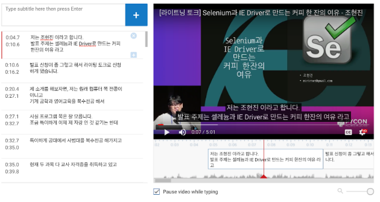

영상 자막 생성 작업
문자 통역 자막 작업 봉사자 여러분 환영합니다!
이 가이드라인은 TED Open Translation Project 중 TED Korean Translators의 가이드라인을 참고로 만들어졌습니다.
참고 자료
- Guide to subtitling TED Talks on Amara (Amara를 이용한 TED 강연 번역 지침)
- TED Translators Resources (TED Translators 번역 자료)
자막 스크립트 초안 작업
문자통역 자막 생성 작업을 하기 위해서는 자막 스크립트를 편집해야 합니다. 해야 하는 것들은 아래와 같습니다.
스크립트 저장소 : https://github.com/pythonkr/pyconkr-script
오타 등을 제외하고는 발화 내용을 편집하지 않도록 합니다.
- 파일 인코딩은 UTF-8로 통일합니다.
- 오탈자는 수정합니다.
- 개발 용어는 영문으로 표기합니다.
- 보다 자세한 표기에 대해서는 자막 용어집을 참조해주세요.
- *, - 이나 발표자명이 발화 내용 앞에 적혀있을 경우 삭제합니다.
- e.g., - 이것은 말이죠 / - 강종구 : 이 부분에서...
- 자막 작업 시 복사, 붙여넣기가 편하도록 문장을 나누고 공백열을 추가합니다.
자막 가이드라인
- 자막 길이 1-7초 (자막이 7초가 넘지 않도록)
- 하나의 자막에서 최고 줄 수 : 2줄
- 하나의 자막에서 최고 줄 길이 : 21 한국어 글자
- 줄 바꾸기에서 언어적 단위를 자르지 말 것 (형용사구, 명사구, 절 등. 또한 끝문장과 시작 문장을 같이 넣지 말 것)
- 자막 구조를 위해 한 문장의 끝부분과 다른 문장의 시작 부분을 한 자막에 합쳐 넣지 말 것
- 텍스트 자르기 : 읽기 속도나 길이를 위해서 필요하지 않다면 문장을 너무 짧게 자르지 말 것 (한국어 글자가 14자 정도 이하면 너무 짧음)
- 강연이 아닌 소리 재현을 하려면 소괄호 안에 넣을 것
- 화면에 뜨는 텍스트는 대괄호에 넣을 것
- 타임라인에서 휴지 시간이 1초가 넘지 않는 자막은 앞과 뒤를 붙일 것. 그렇게 하지 않으면 화면이 번쩍거려 가독성이 떨어짐
- 말이 시작되기 이전에 100ms이상으로 자막이 빨리 시작되면 안 됨
영상 자막 작업 시 도움이 되었던 팁
- 유튜브에서 플레이, 스탑하면서 하기에는 너무 힘들다면? 동영상을 다운 받아서 진행하자
- 주소가 https://www.youtube.com/watch?v=z95MU9fjjig 이라면 주소를
youtube->ssyoutube로 변경해서 페이지를 열어보자 (https://www.ssyoutube.com/watch?v=z95MU9fjjig) - 그러면 download video in browser를 찾아서 클릭하고 기다린다. 잠시 기다리면 download 링크가 생성된다. 다운로드 받아서 편하게 동영상 플레이어를 통해서 편집하자
- 주소가 https://www.youtube.com/watch?v=z95MU9fjjig 이라면 주소를
- 영상 자막의 싱크도 파일로 받아서 시작하자
- 자막 추가를 눌러서 들어간 편집창에서
Action을 선택하자 - 거기서 download 를 눌러서 파일을 받으면 화면에 보이는 자동 싱크의 내용으로 파일이 받아진다.
- 그 파일을 일반 텍스트 편집기로 열어서 시간에 맞춰 일단 들리는 대로 텍스트를 붙여 넣는다.
- 파일을 저장하고 작업한 파일을 업로드 한다.
- 자막 추가를 눌러서 들어간 편집창에서

- 자막의 타임 싱크를 맞추는 것은 youtube 편집기를 사용하자
- 몇 번 사용해보면 생각보다 꽤 편리하다.
- 오른쪽 빨간색 얇은 바는 현재 플레이가 멈춘 정확한 위치이다.
- 이 위치를 타임 바를 드래깅해서 좌우로 이동이 가능하다.
- 하나의 텍스트 바를 끌어서 이동하면 다른 것도 붙어서 시간이 줄어들거나 늘어난다.
- 이렇게 몇 번 자막 타임 바가 붙어있는 것을 분리해보고 결합해보는 것은 먼저 연습하는 것을 추천한다.
- 현재 있는 자막에서 엔터를 눌러 다음 줄로 넘기면 자금 있는 자막의 타임 바가 2개로 분리되면서 텍스트도 분리된다.
- 하나의 자막에서 줄바꿈만 하고 싶다면 shift+enter를 눌러 줄바꿈을 한다.
- 몇 번 사용해보면 생각보다 꽤 편리하다.
- 장 내 분위기를 알 수 있게 도움을 주면 좋은 것 같다.
- (청중 웃음) (청중 박수) (청중 더 크게 웃음) 이런 것을 통해 발표장의 분위기를 전달하려 노력하였다.
- 발표장의 분위기는 가급적 두 번째 줄 마지막에 추가하도록 해보았다.
- 라이트닝 토크 기준(5분)으로 2시간 30분 정도 걸렸다.
- 처음에 방법을 찾느라 걸린 시간이 30분 정도
- Youtube 타임 편집기를 익히는데 30분 정도 걸렸다고 생각할 수 있을 듯